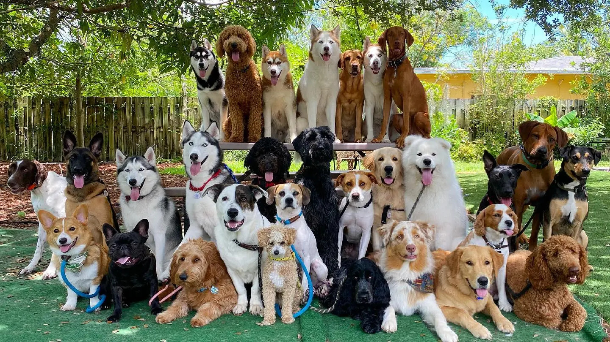

How to Choose Your Best Furry Companion
A dog is an amazing addition to any home since they are a devoted buddy, a constant source of joy, and a faithful companion. But getting a dog is more than just a decision; you must make a commitment to provide your new four-legged family member with the care, attention, and fulfillment they deserve.
One of the best things about getting a new dog into your house is picking the breed. With so many breeds to choose from, it may be really satisfying to discover the right match.
There is a great variety of dog kinds since different breeds differ in their lineage, appearance, size, purpose, and temperament. While certain breeds are purposefully made for competition, hunting, or herding, others are made for companionship.
The size, demeanor, and look of a dog are greatly influenced by its breed. Being aware of each breed's original function can help you make the best choice possible. Important aspects such as the size and energy level of your future dog will also frequently depend on its breed.
Assessing Your Lifestyle
Choosing a Breed: Lifestyle Factors
It's critical to fit your lifestyle with the characteristics of your pet when choosing a dog breed. Dogs become cherished members of your family and are more than just pets. Here's how to assess your lifestyle in order to select the ideal dog:
1. Living Situation
The size of your living space and your location are key factors in choosing the right dog breed. If you live in an apartment, smaller or toy breeds like Chihuahuas, Pomeranians, or French Bulldogs might be more comfortable due to their lower space requirements.
However, if you have a yard, you can consider larger, more energetic breeds like Labradors, Golden Retrievers, or German Shepherds, who will appreciate the extra space to run and play.
Your location also plays a significant role. In urban settings, breeds that can adapt to city life and handle noise and crowds, such as Boston Terriers or Shih Tzus, are ideal. Conversely, in rural areas with more outdoor space, breeds like Border Collies or Australian Shepherds, which thrive on activity and space, might be a better fit.
It's all about finding the right balance to ensure your furry friend is happy and comfortable in their environment.
2. Activity Level
Being honest about your activity level is crucial when choosing a dog breed. If you're an active outdoor enthusiast who enjoys hiking, running, or playing fetch, high-energy breeds like Border Collies, Australian Shepherds, or Labrador Retrievers would be a great fit. These breeds thrive on physical activity and will happily join you on your adventures.
On the other hand, if you prefer quieter indoor pursuits, a more laid-back, lower-energy breed might be a better match. Breeds like Bulldogs, Basset Hounds, or Shih Tzus are known for their more relaxed nature and are content with less intense exercise.
It's all about finding a breed that matches your lifestyle to ensure both you and your furry friend are happy and healthy.
3. Time Availability
Your work schedule plays a crucial role in choosing the right dog breed. If you're often away from home, breeds like Basset Hounds, Chow Chows, and Basenjis are great choices because they are more independent and can handle alone time better.
However, if you have a flexible schedule or work from home, you can consider breeds that thrive on companionship and interaction, such as Retrievers, who are known for their friendly and social nature.
It's all about finding the right match for your lifestyle and ensuring your furry friend gets the attention and care they need.
4. Family Structure
considering your family's needs is essential when choosing a dog breed. If you have young children or other pets, breeds like Retrievers, Beagles, Collies, Pugs, and Newfoundlands are known for their friendly and gentle nature, making them ideal family dogs.
For single individuals or couples, breeds that are more independent or require less attention might be a better fit. However, with proper training and socialization, most breeds can adapt well to family life.
It's all about finding a breed that matches your family's dynamics and ensuring everyone, including your furry friend, is happy and comfortable.
5. Experience Level
your prior experience with dogs is an important factor to consider. If you're a first-time dog owner, you might want to start with breeds that are known for being more forgiving and easier to train, such as Golden Retrievers, Labrador Retrievers, or Cavalier King Charles Spaniels. These breeds are generally friendly, adaptable, and eager to please, making them great for novice pet parents.
On the other hand, if you're a veteran pet parent with experience in handling dogs, you might be more comfortable with breeds that have unique traits or require more specialized training. Breeds like Border Collies, German Shepherds, or Belgian Malinois are highly intelligent and energetic, but they can be a handful for inexperienced owners.
It's all about finding a breed that matches your experience level and ensuring you can provide the right training and care for your new furry friend.
By considering these factors, you can find a dog breed that fits well with your lifestyle and becomes a beloved member of your family.
Understanding Dog Characteristics
Choosing a Breed: What to Consider
Dogs come in a diverse array of sizes, energy levels, temperaments, and grooming needs. To make this process easier, we've put together the ultimate guide to understanding dog breed characteristics.
Size:
When selecting a dog breed, size is crucial. The smallest breeds are only a few pounds in weight and only a few inches tall, while the largest can reach 200 pounds and three feet in height.
Large dogs come with additional responsibilities, such as weight restrictions on flights, cramped living quarters, and increased veterinary costs. They also require larger toys, bowls, and beds. However, giant dogs can be devoted and protective companions if you have plenty of space both indoors and outside.
In addition to being easier to keep in tiny living areas, little dogs typically cost less to vet. But because they can be more prone to anxiety and fragility, they might not be the best choice for families with little children.
Energy Levels:
It's important to pick a dog whose energy level fits your way of life. A sporty breed or terrier can be a perfect fit for you if you prefer being outside doing things like bicycling, running, or hiking. Because they may continue to play energetically after they are puppies, these breeds are also excellent for families with children.
However, a toy breed, non-sporting dog, or even an elderly dog can be a better option if you're a senior or like a slower pace. Many dogs will gladly keep you company indoors and require little exercise. Additionally, since only 25% of elderly dogs are adopted, adopting one gives them a second opportunity.
Temperament and Personality:
Take your dog's disposition into account while selecting a breed. Consider whether you can provide a rewarding profession, such as farm labor or sports, for a working or herding breed, for instance. Likewise, if you choose a breed of toy that requires love and care, make sure you have adequate time at home to provide for their needs.
To put it briefly, consider how much time you can dedicate to training and whether the lifestyle of your family fits with the dog's innate tendencies and planned use.
Grooming Needs:
The requirements for grooming are a crucial consideration. It may be vital to have a hypoallergenic breed, such as a Goldendoodle or Shih Tzu, if someone in your home has allergies.
Additionally, you should determine how much shedding you can tolerate and how often you'll require expert grooming. A short-haired dog can be a better option than one with a long coat that requires constant care if you don't have the time or money for frequent grooming.
By understanding these characteristics, you can find a breed that fits seamlessly into your life and brings you years of joy and companionship.
BREED GROUPS
Choosing a Breed: What to Consider
Dogs come in a diverse array of sizes, energy levels, temperaments, and grooming needs. To make this process easier, we've put together the ultimate guide to understanding dog breed characteristics.
Working Group
Quick to learn, dogs of the Working Group are intelligent, strong, watchful, and alert. Bred to assist man, they excel at jobs such as guarding property, pulling sleds and performing water rescues. Doberman Pinschers, Siberian Huskies and Great Danes are part of this Group, to name just a few...
Read MoreHerding Group
Up until 1983, the breeds in the Herding Group were part of the Working Group. All Herding breeds share an instinctual ability to control the movement of other animals. These breeds were developed to gather, herd and protect livestock. Today, some like the Belgian Malinois and the German Shepherd Dog...
Read MoreToy Group
Toy breeds might be short on size, but they are definitely not short on personality! Breeds in the Toy group are affectionate, sociable and adaptable to a wide range of lifestyles. Just don't let their size and winsome expressions fool you: they are smart full of energy and many have strong...
Read MoreHound Group
Most hounds share the common ancestral trait of being used for hunting. Some use acute scenting powers to follow a trail. Others demonstrate a phenomenal gift of stamina as they relentlessly run down quarry. Beyond this, however, generalizations about hounds are hard to come by, since the Group...
Read MoreSporting Group
Naturally active and alert, Sporting dogs make likeable, well-rounded companions. First developed to work closely with hunters to locate and/or retrieve quarry. There are four basic types of Sporting dogs; spaniels, pointers, retrievers and setters. Known for their superior instincts in water...
Read MoreNon-Sporting Group
Non-Sporting dogs are made up of a diverse group of breeds with varying sizes, coats, personalities and overall appearance. They come from a wide variety of backgrounds so it is hard to generalize about this group of dogs. From the sturdy Chow Chow, to the compact French Bulldog and...
Read MoreTerrier Group
Feisty and energetic are two of the primary traits that come to mind for those who have experience with Terriers. In fact, many describe their distinct personalities as “eager for a spirited argument.” Bred to hunt, kill vermin and to guard their families home or barn; sizes range from...
Read More3 Comments

John Doe 01 Jan 2045
Having a dog is the greatest decision I made in my life...